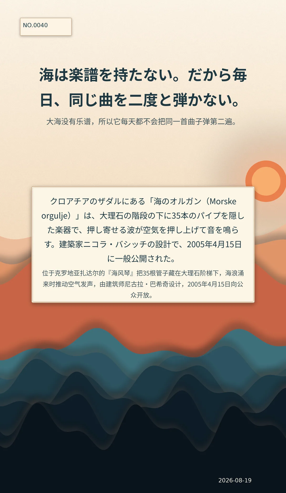

海は楽譜を持たない。だから毎日、同じ曲を二度と弾かない。（译：大海没有乐谱，所以它每天都不会把同一首曲子弹第二遍。）
クロアチアのザダルにある「海のオルガン（Morske orgulje）」は、大理石の階段の下に35本のパイプを隠した楽器で、押し寄せる波が空気を押し上げて音を鳴らす。建築家ニコラ・バシッチの設計で、2005年4月15日に一般公開された。（译：位于克罗地亚扎达尔的『海风琴』把35根管子藏在大理石阶梯下，海浪涌来时推动空气发声，由建筑师尼古拉·巴希奇设计，2005年4月15日向公众开放。）
c425da9619ac8270冷知识由执笔的模型自行查证。逐条断言、来源与所引原句存档在纯文字副本里，未经程序逐字校验，留作事后核实。